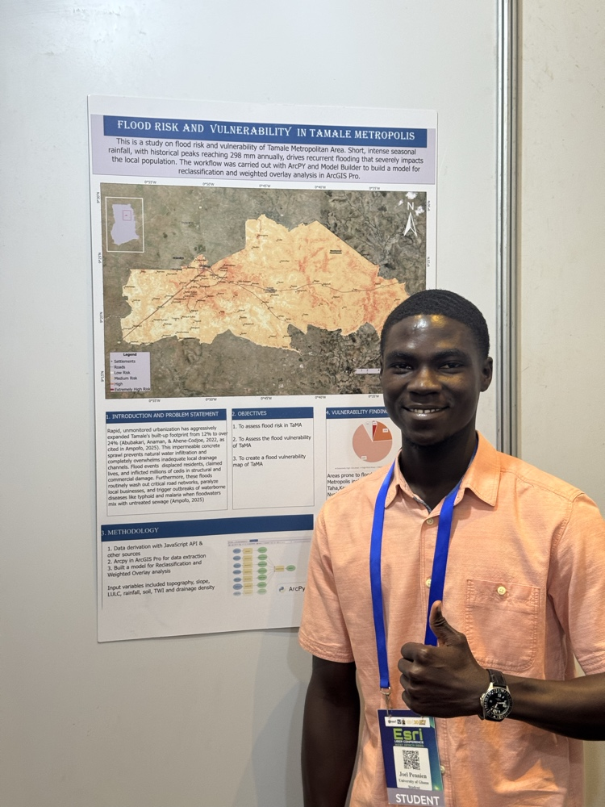
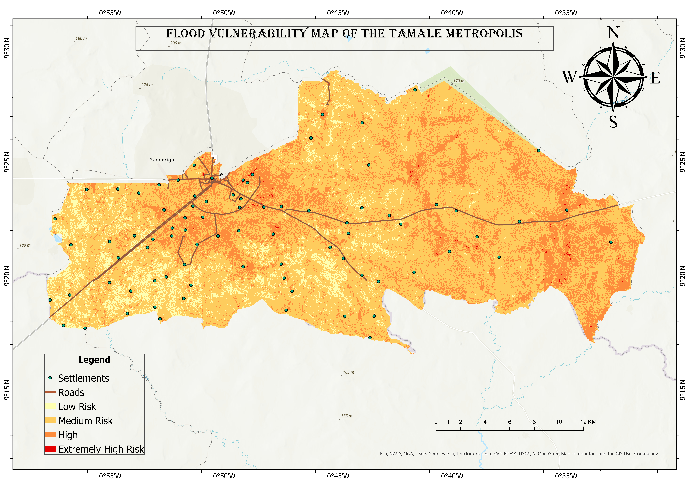
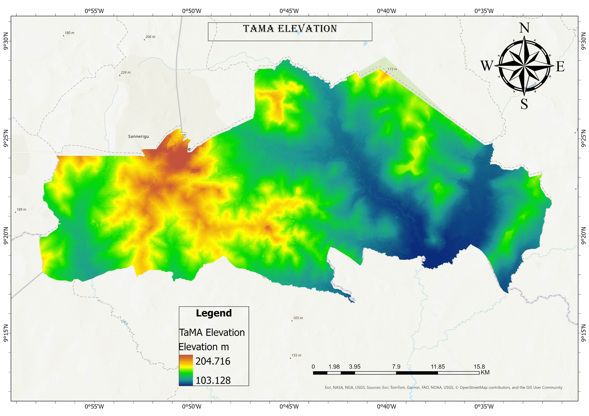
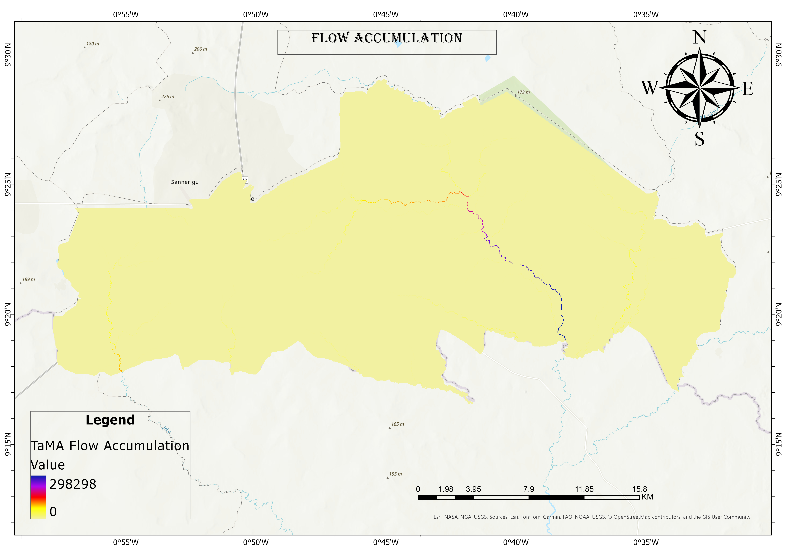
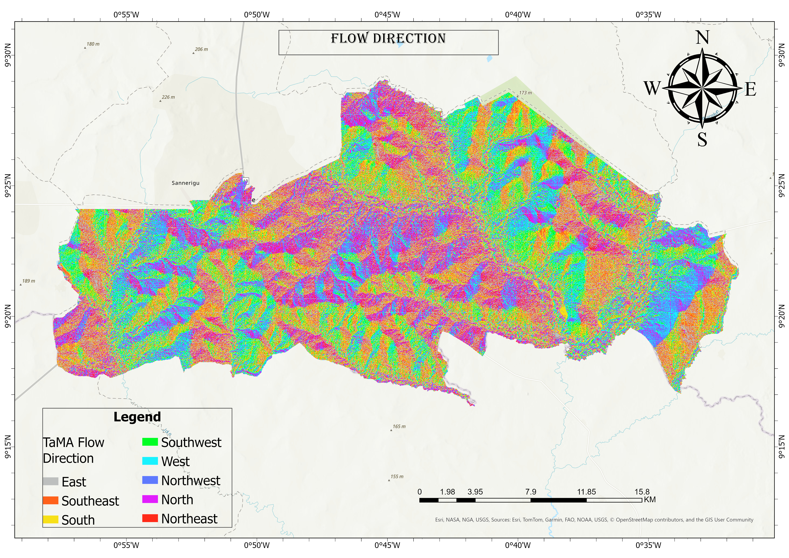
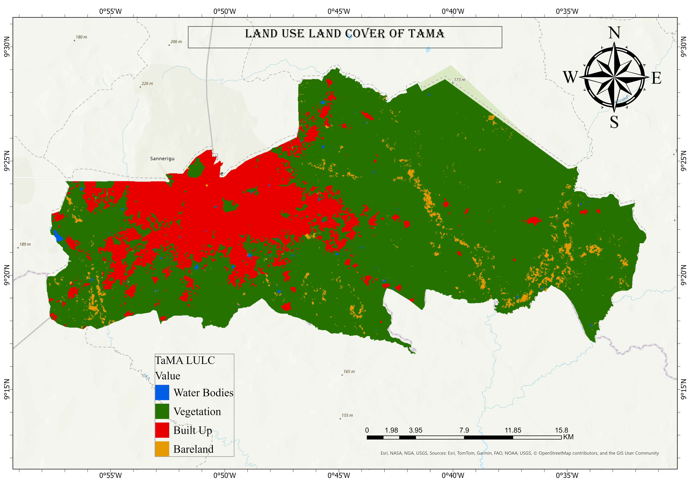
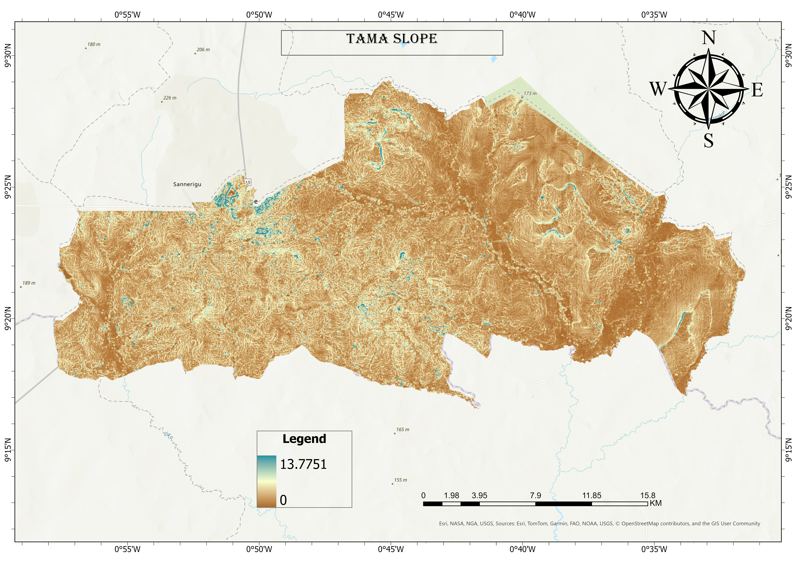
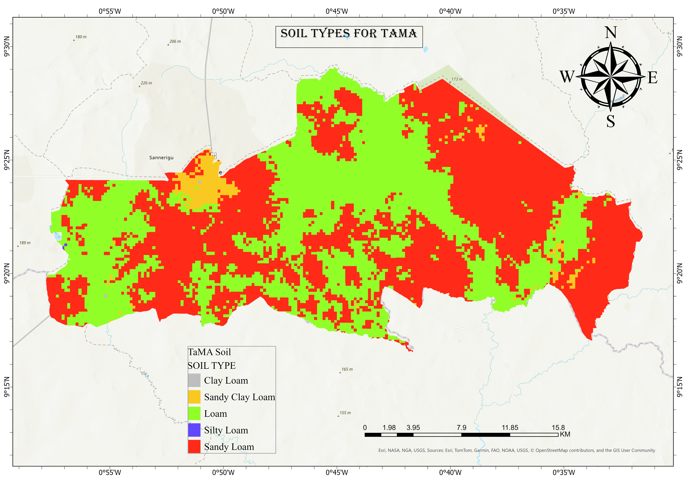
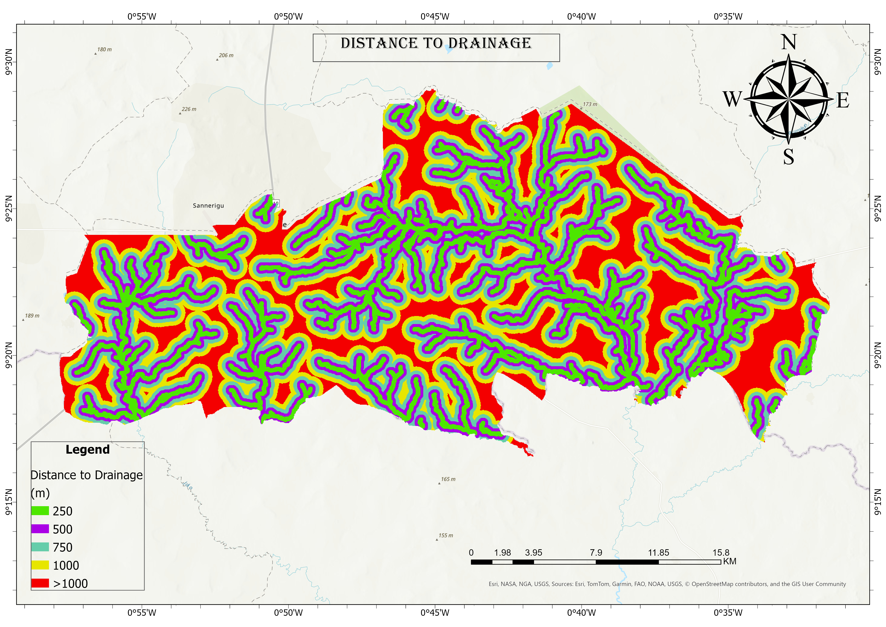

About Me
Transforming complex geographic data into intuitive visual solutions for stakeholders.
I am a Geospatial Professional and a graduate in Geography and Resource Development from the University of Ghana, specializing in Geographic Information Systems (GIS), Remote Sensing, and Web GIS development. I build automated spatial workflows and interactive mapping dashboards that streamline geospatial data processing and drive strategic decision-making. Proficient in the Esri suite (ArcGIS Pro, ArcGIS Online, Experience Builder, and Dashboards), Google Earth Engine, and ENVI, I focus on transforming complex geographic data into intuitive visual solutions for stakeholders.

Sample Projects
Here's a selection of projects that showcase my passion for geospatial design and development, reflecting creativity and innovation.








Developed automated urban flood risk decision support workflows for the Tamale Metropolitan Area using Google Earth Engine, ArcPy, and ModelBuilder.
Automated Urban Flood Susceptibility System


Built a fully functional interactive campus mobility and navigation web application utilizing the Esri suite, ArcGIS Experience Builder, ArcGIS Online, and custom Arcade scripts.
UG GO Campus Mobility Web Application


Evaluated the spatial distribution and geographic accessibility of mental health facilities across the Greater Accra Metropolitan Area using Euclidean distance models.
Mental Health Facilities Spatial Analysis


Designed minimalist spatial visualizations of Ghana's road network, global ecoregions, and transport density with a focus on clean cartographic design.
#30DayMapChallenge

Executing advanced remote sensing workflows, including aerial drone and satelitte image analysis, raster image calibration, and spatiotemporal Land Use and Land Cover (LULC) classification using ENVI and Google Earth Engine.
Remote Sensing & Aerial Imagery Analysis
Technical Skills
The tools I use to turn spatial data into something people can actually use.
Languages & Scripting
Writing clean, efficient code to build applications and automate geospatial workflows.
Web GIS & Visualization
Building interactive mapping portals, dashboards, and spatial web interfaces.
Geospatial & Remote Sensing
Processing spatial data, satellite imagery, and producing analytical maps.
Field Operations & Tools
Executing field data collection, drone mapping, and deploying scalable projects.
Experience
Professional background in spatial data collection, remote sensing, and Web GIS.
GIS Analyst
Axam Resources Limited
NOVEMBER 2026 — PRESENT
Producing high-quality cartographic outputs, spatial reports, and interactive maps to assist executive decision-making and strategic planning.
Spatial Analyst
Matrix Geospatial
NOVEMBER 2026 — PRESENT (PART-TIME)
Developing spatial datasets and comprehensive metadata, and providing specialized consulting for academic geographic research projects.
GIS Analyst Intern
Sambus Geospatial Limited
OCTOBER 2025 — AUGUST 2026
Executed technical spatial data collection, digitizing, geocoding, and attribute editing.
Configured interactive ArcGIS Dashboards and customized web applications using ArcGIS Experience Builder.
Operated VTOL drones for aerial data acquisition and performed image calibration procedures.
Site Mapper
Keycore Construction Limited
MARCH 2024 — SEPTEMBER 2025 (PART TIME)
Collaborated with the survey department to conduct precise site mapping and topographic surveys for construction planning.
Intern
Ghana COCOBOD
AUGUST 2024
Contributed to mapping illegal mining sites in cocoa-growing areas using satellite imagery and GIS software.
Maintained and updated spatial attribute databases to support resource monitoring workflows.
Intern
J.J Ventures(Agric Company)
MAY 2024
Supervised irrigation of nursery and the transportation of seedlings.
Performed farm data management